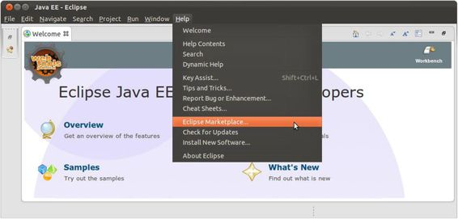

Spring Development Tools
In this chapter you’ll learn how to setup and work with the most popular development tools to create Spring applications. Like many other software frameworks, Spring has a wide array of development tools to choose from, from bare-bones command line tools to sophisticated graphical tools the software industry calls IDEs (Integrated Development Environments).
Whether you already use certain Java development tools or are a first-time developer, the following recipes will guide you on how to set up different toolboxes to do the exercises in the upcoming chapters, as well as develop any Spring application.
Table 1-1 describes a list of toolboxes and the corresponding recipes you need to follow to get the right tools to start a Spring application.
Table 1-1. Toolboxes to develop Spring applications
Bear in mind you don’t need to install every toolbox described in Table 1-1 to work with Spring. It can be helpful to try them all out, so you can use the toolbox you feel most comfortable with.
1-1. Build a Spring application with the Spring Tool Suite
Problem
You want to use the Spring Tool Suite (STS) to build a Spring application.
Solution
Install STS on your workstation. Open STS and click the ‘Open Dashboard’ link. To create a new Spring application, click on the ‘Spring project’ link on the dashboard window inside the ‘Create’ table. To open a Spring application that uses Maven, from the top level ‘File’ menu select the ‘Import...’ option, click on the ‘Maven’ icon and select the ‘Existing Maven projects’. Next, select the Spring application based on Maven from your workstation.
To install Gradle on STS, click on the ‘Extensions’ tab at the bottom of the dashboard window. Click on the ‘Gradle Support’ checkbox. Proceed with the Gradle extension installation and restart STS once the installation is complete. To open a Spring application that uses Gradle, from the top level ‘File’ menu select the ‘Import...’ option, click on the ‘Gradle’ icon and select the ‘Gradle project’. Next, select the Spring application based on Gradle from your workstation. Click on the ‘Build Model’ button and last click ‘Finish’ to start working on the project.
How It Works
STS is the IDE developed by SpringSource -- a division of Pivotal -- creators of the Spring framework. STS is specifically designed to develop Spring applications, making it one of the most complete tools for this purpose. STS is an Eclipse-powered tool, so it has the same ‘look and feel’ as the Eclipse open source IDE.
STS can be downloaded for free from http://spring.io/tools/sts. STS is available for all six major operating system (OS) versions: Windows, Windows (64bit), Mac OS X (Cocoa), Mac OS X (Cocoa, 64bit), Linux (GTK), and Linux (GTK, 64bit). STS is also distributed in two versions of Eclipse, the Eclipse 3.x branch and the Eclipse 4.x branch. In addition, STS is itself versioned, so you have the option to download the latest stable release or a milestone/development version.
Download the version suited to your OS and I recommend you chose the Eclipse 4.x branch because it’s newer. At the time of this writing the latest stable release of the Spring Tool Suite is the 3.5 version. Therefore the download link you chose should have the title ‘SPRING TOOL SUITE 3.5.1.RELEASE - BASED ON ECLIPSE 4.3.2’ or you can choose a newer release if you prefer.
Once you download STS, ensure you have a Java SDK installed on your system since this is an STS installation requirement. Proceed to install STS. Follow the installation wizard and you should have STS setup in 5 to 10 minutes. Upon termination, a folder with the name STS_<VERSION> is created under the home folder of the user making the installation or where the user chooses to place the installation-based folder. If you inspect this folder, you’ll see the STS executable which is used to start STS.
Start STS. At startup, STS asks you to define a workspace location. A workspace is where STS places all project information. You can keep the default directory which is under the main STS installation directory or define a different directory to your liking. After startup is complete you’ll see a screen like the one in Figure 1-1.
Figure 1-1. STS startup screen
Click on the ‘Open Dashboard’ link. Then you’ll see the STS Dashboard illustrated in Figure 1-2
Figure 1-2. STS Dashboard
.
On the STS Dashboard, in the center column inside the ‘Create’ box there’s a link called ‘Spring project’. You can click on this link to create a new Spring application. You can go ahead and create an empty application if you like. You’ll be asked for a name and to define a series of parameters which you can leave with default values.
A more common case than creating a Spring application from scratch is to continue development on a pre-existing Spring application. Under such circumstances, the owner of an application generally distributes the application’s source code with a build script to facilitate its ongoing development.
The build script of choice for most Java application is a pom.xml file designed around the build tool called Maven and more recently a build.gradle file designed around the build tool called Gradle. The book’s source code and its applications are provided with Gradle build files, in addition to a single application with a Maven build file.
JAVA BUILD TOOLS, A MEANS TO AN END: ANT, MAVEN, IVY, GRADLE
In a Java application there can be dozens or hundreds of menial tasks required to put together an application (e.g., Copying JARs or configuration files, setting up Java’s classpath to perform compilation, downloading JAR dependencies, etc.). Java build tools emerged to perform such tasks in Java applications.
Java build tools continue to have their place because applications distributed with build files ensure that all menial tasks intended by the creator of an application are replicated exactly by anyone else using the application. If an application is distributed with an Ant build.xml file, a Maven pom.xml file, an Ivy ivy.xml file or a Gradle build.gradle file, each of these build files guarantees build consistency across users and different systems.
Some of the newer Java build tools are more powerful and enhance the way their earlier counterparts work and each build file uses its own syntax to define actions, dependencies, and practically any other task required to build an application. However, you should never lose sight of the fact that a Java build tool is just a means to an end. It’s a choice made by the creator of an application to streamline the build process.
Don’t panic if you see an application distributed with a build file from the oldest Ant version or the newest Gradle version, from an end user perspective all you need to do is download and install the build tool to create the application as its creator intended.
Since many Spring applications continue to use Maven and some of the newer Spring applications use Gradle, I’ll describe the import process into STS for both types of projects.
Once you download the book’s source and unpack it to a local directory, click on the STS top level ‘File’ menu and select the ‘Import...’ option. A pop-up window appears. In the pop-up window, click on the ‘Maven’ icon and select the ‘Existing Maven Projects’ option as illustrated in Figure 1-3.
Figure 1-3. STS maven import
Next, click on the ‘Next’ button. In the following screen, on the ‘Select root directory’ line click on the ‘Browse’ button and select the directory of the book’s source code in Ch1 called springintro_mvn as illustrated in the Figure 1-4.
Figure 1-4. STS select maven project
Notice in Figure 1-4 the ‘Projects:’ window is updated to include the line pom.xml com.apress.springrecipes... which reflects the Maven project to import. Select the project checkbox and click on the ‘Finish’ button to import the project. All projects in STS are accessible on the left-hand side in the ‘Package Explorer’ window. In this case, the project appears with the name springintro_mvn.
If you click on the project icon in the ‘Package Explorer’ window, you’ll be able to see the project structure (i.e., java classes, dependencies, configuration files, etc.). If you double click on any of the project files inside the ‘Package Explorer’, the file is opened in a separate tab in the center window -- alongside the dashboard. Once a file is opened, you can inspect, edit, or delete its contents.
Select the project icon in the ‘Package Explorer’ window and click on the right button of your mouse. A contextual menu appears with various project commands. Select the ‘Run as’ option followed by the ‘Maven build’ option. A pop-up window appears to edit and configure the project build. Just click on the ‘Run’ button in the bottom right. In the bottom center of STS you’ll see the ‘Console’ window appear. In this case, the ‘Console’ window displays a series of build messages produced by maven, as well as any possible errors in case the build process fails.
You’ve just built the application, congratulations! Now let’s run it. Select the project icon from the ‘Package Explorer’ window once again and press the F5 key to refresh the project directory. Expand the project tree. Toward the bottom you’ll see a new directory called target which contains the built application. Expand the target directory by clicking on its icon. Next, select the file springintro_mvn-1.0-SNAPSHOT.jar as illustrated in Figure 1-5.
Figure 1-5. Select executable in STS
With the file selected, click on the right button of your mouse. A contextual menu appears with various project commands. Select the ‘Run as’ option followed by the ‘Run configurations...’ option. A pop-up window to edit and configure the run appears. Ensure the ‘Java application’ option is selected on the left-hand side. In the ‘Main class:’ box introduce: com.apress.springrecipes.hello.Main. This is the main class for this project, as illustrated in Figure 1-6.
Figure 1-6. Define main executable class in STS
Click on the ‘Run’ button in the bottom right. In the bottom center of STS you’ll see the ‘Console’ window. In this case, the ‘Console’ window displays the application logging messages, as well as a greeting message defined by the application.
Even though you’ve built and run a Spring application with STS, we’re still not done. The process you just completed with STS was mostly done behind the scenes by the build tool called Maven. Next, it’s time to import a Spring application that uses one of the newer build tools call Gradle.
While gradle is still a relatively new tool, there are signs that gradle will supplant Maven in the future. For example, many large Java projects -- such as the Spring framework itself -- now use Gradle instead of maven due to its greater simplicity and power. Given this tendency, it’s a worth describing how to use Gradle with STS.
 Tip If you have a Maven project (i.e., pom.xml file) you can use the bootstrap plugin or maven2gradle tool to create a Gradle project (i.e., build.gradle file). The bootstrap plugin is included with Gradle (See documentation at http://gradle.org/docs/current/userguide/bootstrap_plugin.html) and the maven2gradle tool is available at https://github.com/jbaruch/maven2gradle.git.
Tip If you have a Maven project (i.e., pom.xml file) you can use the bootstrap plugin or maven2gradle tool to create a Gradle project (i.e., build.gradle file). The bootstrap plugin is included with Gradle (See documentation at http://gradle.org/docs/current/userguide/bootstrap_plugin.html) and the maven2gradle tool is available at https://github.com/jbaruch/maven2gradle.git.
To install Gradle in STS go to the dashboard window. At the bottom of the dashboard window click on the ‘Extensions’ tab. A list of STS extensions is loaded in the window. Click on the ‘Gradle Support’ checkbox from the list as illustrated in Figure 1-7. If you don’t see the ‘Gradle Support’ extension in the list, type the word ‘gradle’ in the ‘Find:’ textbox. If you still don’t see the ‘Gradle Support’ extension after this step, click on the ‘Find Updates’ button.
Figure 1-7. Gradle STS installation
Click on the ‘Next’ button in the bottom right to proceed with the Gradle extension installation. A confirmation pop-up window appears as illustrated in Figure 1-8.
Figure 1-8. Gradle STS installation confirmation
Click on the pop-up window’s ‘Next’ button. Once you read the license and accept the terms click on the pop-up window’s ‘Finish’ button. The Gradle extension installation process starts. Once the installation process finishes, you’ll be prompted to restart STS for the changes to take effect. Confirm the STS restart to finish the Gradle installation.
The book’s source contains numerous Spring applications designed to be built with Gradle, so I’ll describe how to import these Spring applications into STS. Once you download the book’s source and unpack it to a local directory, in STS click on the top level ‘File’ menu and select the ‘Import...’ option. A pop-up window appears. In the pop-up window, click on the ‘Gradle’ icon and select the ‘Gradle Project’ option as illustrated in Figure 1-9.
Figure 1-9. STS gradle import
Next, click on the ‘Next’ button. In the following screen, in the ‘Select root directory’ line click on the ‘Browse’ button and select the book’s source code top level directory. Next, click on the ‘Build model’ button beside the ‘Browse’ button. The build model process retrieves the various Gradle subprojects contained in the book’s source code. A pop-up window appears indicating the progress of the build model process. Once the build model process finishes, you’ll see a list of Gradle projects, click on the project checkbox called ‘springintro’ inside ‘Ch1’ as illustrated in Figure 1-10.
Figure 1-10. STS select gradle subproject
Click on the ‘Finish’ button to import the project. If you look at the left-hand side of STS in the ‘Package Explorer’ window you’ll see the project is loaded with the name springintro. If you click on the project icon, you’ll be able to see the project structure (i.e., java classes, dependencies, configuration files, etc.).
Select the project icon and click on the right button of your mouse. A contextual menu appears with various project commands. Select the ‘Run as’ option followed by the ‘Gradle build’ option. A pop-up window appears to edit and configure the build. Click on the Project/task option ‘build’ and then click on the ‘Run’ button in the bottom right. In the bottom center of STS you’ll see the ‘Console’ window appear. In this case, the ‘Console’ window displays a series of build messages produced by gradle, as well as any possible errors in case the build process fails.
You’ve just built the application, now let’s run it. Select the project icon once again and press the F5 key to refresh the project directory. Expand the project tree. Toward the middle you’ll see a new directory called libs which contains the built application. Expand the libs directory by clicking on the icon. Next, select the file springintro-1.0-SNAPSHOT.jar.
With the file selected, from the top level menu ‘Run’ select the ‘Run configurations...’ option. A pop-up window appears to edit and configure the run. Ensure the ‘Java application’ option is selected in the left-hand side. In the ‘Main class:’ box introduce com.apress.springrecipes.hello.Main. This is the main class for this project. Click on the ‘Run’ button in the bottom right. In the bottom center of STS you’ll see the ‘Console’ window. In this case, the ‘Console’ window displays the application logging messages, as well as a greeting message defined by the application.
1-2. Build a Spring application with the Eclipse IDE
Problem
You want to use the Eclipse IDE to build Spring applications.
Solution
From Eclipse’s top level ‘Help’ menu select the ‘Eclipse Marketplace...’ . Install STS for Eclipse. To create a new Spring application, click on the top level ‘File’ menu select t ‘New’ and then the ‘Project’ . Next, click on the ‘Spring project’ option.
To open a Spring application that uses Maven, you first need to install Maven Integration for Eclipse (a.k.a. m2eclipse). From Eclipse’s top level ‘Help’ menu select the ‘Eclipse Marketplace...’. Install Maven Integration for Eclipse. Click on the Eclipse top level ‘File’ menu and select the ‘Import...’ option. A pop-up window appears. In the pop-up window, click on the ‘Maven’ icon and select the ‘Existing Maven Projects’ option. Next, seledct the Spring application based on Maven from your workstation.
To open a Spring application that uses Gradle, you first need to install Gradle Integration for Eclipse. From Eclipse’s top level ‘Help’ menu select the ‘Eclipse Marketplace...’. Install Maven Integration for Eclipse. Click on the Eclipse top level ‘File’ menu and select the ‘Import...’ option. A pop-up window appears. In the pop-up window, click on the ‘Gradle’ icon and select the ‘Gradle Project’ option. Next, select the Spring application based on Gradle from your workstation.
How It Works
Eclipse is one of the most popular IDEs to develop Java applications, therefore it can be a natural choice to develop Spring applications. For this recipe I’ll assume you’ve already installed Eclipse and are familiar with its environment.
Tip If you haven’t installed Eclipse, I recommend you try out STS which is described in Recipe 1-1. STS is an Eclipse-powered tool -- meaning it has the same ‘look and feel’ as Eclipse -- but it’s a product made by the creators of the Spring framework -- SpringSource -- so it’s specifically designed to fulfill the needs of Spring application development.
Eclipse supports a wide variety of tools that make it easy to work with certain technologies directly in the Eclipse IDE. Some of these tools include support for version control technologies like svn and git, support for platform technologies like Python and Android and as you probably already guessed support for the Spring framework. Eclipse makes all these tools available in what it calls the Eclipse marketplace.
You can access the Eclipse marketplace at its website (http://marketplace.eclipse.org/) or directly in the Eclipse IDE from the top level ‘Help’ menu selecting the ‘Eclipse Marketplace...’ option as illustrated in Figure 1-11.

Figure 1-11. Eclipse Marketplace option
Warning If you don’t see the ‘Eclipse Marketplace...’ option illustrated in Figure 1-11 it means your Eclipse version doesn’t support the Eclipse Marketplace. The Eclipse Marketplace is included in all Eclipse packages available from the Eclipse download page, except the Eclipse classic package.
Once you select the ‘Eclipse Marketplace...’ option a pop-up window appears where you can access and search the Eclipse marketplace.
The Eclipse tool for the Spring framework is called ‘STS for Eclipse’. In the pop-up window you can scroll through the main list or type ‘sts’ in the ‘Find:’ box to limit the main list as illustrated in Figure 1-12.
Figure 1-12. STS for Eclipse installation
Click on the ‘Install’ button alongside the STS for Eclipse tool to begin the process. Follow the installation wizard. Once you read the license and accept the terms click on the pop-up window’s ‘Finish’ button. The STS for Eclipse tool installation process initiates. Once the installation process finishes, you’ll be prompted to restart Eclipse for the changes to take effect. Confirm the Eclipse restart to finish the STS for Eclipse installation.
With the STS for Eclipse tool you gain access to several Spring specific features not available in a regular Eclipse installation. For example, to create a new Spring project from the top level ‘File’ menu select the ‘New’ and then the ‘Project’ option as illustrated in Figure 1-13.
Figure 1-13. Create new Eclipse project
A pop-up window appears to create a new project. If you scroll toward the bottom you’ll see the option to create a Spring project as illustrated in Figure 1-14. You can go ahead and create an empty application if you like, you’ll be asked for a name and to define a series of parameters which you can leave with default values.
Figure 1-14. Create new Spring project in Eclipse
A more common case than creating a Spring application from scratch is to continue development of a pre-existing Spring application. Under such circumstances, the owner of an application generally distributes the application’s source code with a build script to facilitate its ongoing development.
The build script of choice for most Java application is a pom.xml file designed around the build tool called Maven and more recently a build.gradle file designed around the build tool called Gradle. The book’s source code and its applications are provided with Gradle build files, in addition to a single application with a Maven build file.
To access Spring applications distributed with Maven or Gradle build files, it’s necessary to install additional Eclipse tools from the Eclipse Marketplace. Once again you’ll need to use the Eclipse marketplace. From the top level ‘Help’ menu select the ‘Eclipse Marketplace...’ option as illustrated in Figure 1-11. A pop-up window appears where you can access the Eclipse marketplace.
In the ‘Find:’ box type ‘maven integration’ and you’ll see the ‘Maven Integration for Eclipse’ in the main list as illustrated in Figure 1-15. Click on the ‘Install’ button and follow the installation wizard. Postpone the Eclipse restart request so you can also install Gradle. Go back to the Eclipse marketplace. In the ‘Find:’ box type ‘gradle’ and you’ll see the ‘Gradle Integration for Eclipse’ in the main list as illustrated in Figure 1-16. Click on the ‘Install’ button and follow the installation wizard. You’ll be prompted to restart Eclipse for the changes to take effect. Confirm the Eclipse restart to finish the Maven Integration for Eclipse and Gradle Integration for Eclipse installations.
Figure 1-15. Maven Integration for Eclipse installation
Figure 1-16. Gradle Integration for Eclipse installation
With access to both maven and gradle from Eclipse, let’s access some of the book’s applications. Once you download the book’s source and unpack it to a local directory, click on the Eclipse top level ‘File’ menu and select the ‘Import...’ option. A pop-up window appears. In the pop-up window, click on the ‘Maven’ icon and select the ‘Existing Maven Projects’ option as illustrated in Figure 1-17
Figure 1-17. Eclipse maven import
.
Next, click on the ‘Next’ button. In the following screen, on the ‘Select root directory’ line click on the ‘Browse’ button and select the directory Ch1 of the book’s source code and select sprintro_mvn as illustrated in the Figure 1-18.
Figure 1-18. Eclipse select maven project
Notice in Figure 1-18 the ‘Projects:’ window is updated to include the line pom.xml com.apress.springrecipes... which reflects the Maven project to import. Select the project checkbox and click on the ‘Finish’ button to import the project. All projects in Eclipse are accessible on the left-hand side in the ‘Project Explorer’ window. In this case, the project appears with the name sprintro_mvn.
If you click on the project icon in the ‘Project Explorer’ window, you’ll be able to see the project structure (i.e., java classes, dependencies, configuration files, etc.).If you double click on any of the project files inside the ‘Project Explorer’, the file is opened in a separate tab in the center window -- alongside the dashboard. Once a file is opened, you can inspect, edit, or delete its contents.
Select the project icon in the ‘Project Explorer’ window and click on the right button of your mouse. A contextual menu appears with various project commands. Select the ‘Run as’ option followed by the ‘Maven build’ option. A pop-up window appears to edit and configure the project build. Just click on the ‘Run’ button in the bottom right. In the bottom center of Eclipse you’ll see the ‘Console’ window. In this case, the ‘Console’ window displays a series of build messages produced by Maven, as well as any possible errors in case the build process fails.
You’ve just built the application, congratulations! Now let’s run it. Select the project icon from the ‘Project Explorer’ window once again and press the F5 key to refresh the project directory. Expand the project tree. Toward the bottom you’ll see a new directory called target which contains the built application. Expand the target directory by clicking on its icon. Next, select the file sprintro_mvn-1.0-SNAPSHOT.jar as illustrated in Figure 1-19.
Figure 1-19. Select executable in Eclipse
With the file selected, click on the right button of your mouse. A contextual menu appears with various project commands. Select the ‘Run as’ option followed by the ‘Run configurations...’ option. A pop-up window to edit and configure the run appears. Ensure the ‘Java application’ option is selected on the left-hand side. In the ‘Main class:’ box introduce: com.apress.springrecipes.hello.Main. This is the main class for this project, as illustrated in Figure 1-20.
Figure 1-20. Define main executable class in Eclipse
Click on the ‘Run’ button in the bottom right. In the bottom center of Eclipse you’ll see the ‘Console’ window. In this case, the ‘Console’ window displays the application logging messages, as well as a greeting message defined by the application.
Next, let’s build a Gradle application with Eclipse. Go to Eclipse’s top level ‘File’ menu and select the ‘Import...’ option. A pop-up window appears. In the pop-up window, click on the ‘Gradle’ icon and select the ‘Gradle Project’ option as illustrated in Figure 1-21
Figure 1-21. Eclipse Gradle import
.
Next, click on the ‘Next’ button. In the following screen, in the ‘Select root directory’ line click on the ‘Browse’ button and select the top level directory of the book’s source code. Next, click on the ‘Build model’ button beside the ‘Browse’ button. The build model process retrieves the various Gradle subprojects contained in the book’s source code. A pop-up window appears indicating the progress of the build model process. Once the build model process finishes, you’ll see a list of Gradle projects, click on the project checkbox called ‘springintro’ inside ‘Ch1’ as illustrated in Figure 1-22.
Figure 1-22. Eclipse select Gradle subproject
Click on the ‘Finish’ button to import the project. If you look at the left hand side of Eclipse in the ‘Project Explorer’ window you’ll see the project is loaded with the name springintro. If you click on the project icon, you’ll be able to see the project structure (i.e., java classes, dependencies, configuration files, etc.).
Select the project icon and click on the right button of your mouse. A contextual menu appears with various project commands. Select the ‘Run as’ option followed by the ‘Gradle build’ option. A pop-up window appears to edit and configure the build. Click on the Project/task option ‘build’ as illustrated in Figure 1-23.
Figure 1-23. Eclipse select Gradle ‘build’ option
Next, click on the ‘Run’ button in the bottom right. In the bottom center of Eclipse you’ll see the ‘Console’ window appear. In this case, the ‘Console’ window displays a series of build messages produced by gradle, as well as any possible errors in case the build process fails.
You’ve just built the application, now let’s run it. Select the project icon once again and press the F5 key to refresh the project directory. Expand the project tree. Toward the middle inside the build directory you’ll see a new directory called libs which contains the built application. Expand the libs directory by clicking on the icon. Next, select the file springintro-1.0-SNAPSHOT.jar.
With the file selected, from Eclipse’s top level ‘Run’ menu select the ‘Run configurations...’ option. A pop-up window appears to edit and configure the run. Ensure the ‘Java application’ option is selected in the left-hand side. In the ‘Main class:’ box introduce com.apress.springrecipes.hello.Main. This is the main class for this project. Click on the ‘Run’ button in the bottom right. In the bottom center of Eclipse you’ll see the ‘Console’ window. In this case, the ‘Console’ window displays the application logging messages, as well as a greeting message defined by the application.
1-3. Build a Spring application with the IntelliJ IDE
Problem
You want to use the IntelliJ IDE to build Spring applications.
Solution
To start a new Spring application in the IntelliJ ‘Quick Start’ window click on the ‘Create New Project’ link. In the next window, assign a name to the project, a run-time JDK and select the ‘Java Module’ option. In the next window, click on the various Spring checkboxes so IntelliJ download’s the necessary Spring dependencies for the project.
To open a Spring application that uses Maven, you first need to install Maven to work from a command line interface (See Recipes 1-4). From the IntelliJ top level ‘File’ menu select the ‘Import Project’ option. Next, select the Spring application based on Maven from your workstation. In the next screen select the ‘Import project from external model’ option and select a ‘Maven’ type.
To open a Spring application that uses Gradle, you first need to install Gradle to work from a command line interface (See Recipe 1-5). From the IntelliJ top level ‘File’ menu select the ‘Import Project’ option. Next, select the Spring application based on Gradle from your workstation. In the next screen select the ‘Import project from external model’ option and select a ‘Gradle’ type.
How It Works
IntelliJ is one of the most popular commercial IDEs in the market. Unlike other IDEs which are produced by a foundation -- such as Eclipse -- or are made to support the flagship software of a company -- such as STS for the Spring framework -- IntelliJ is produced by a company called JetBrains whose sole business is to commercialize development tools. It’s this focus which makes IntelliJ particularly popular for professional developers in corporate environments.
For this recipe I’ll assume you’ve already installed IntelliJ ultimate edition and just want to get up and running with Spring applications.
Warning IntelliJ is available in a free community edition and an ultimate edition with a 30-day free trial. Although the free community edition provides good value for application development, the community edition does not include support for Spring applications. The instructions that follow are based on the assumption that you’re using the IntelliJ ultimate edition.
To start a Spring application, in the IntelliJ ‘Quick Start’ window click on the ‘Create New Project’ link. In the next window, assign a name to the project, a run-time JDK and select the ‘Java Module’ option as illustrated in Figure 1-24.
Figure 1-24. IntelliJ create Spring project
Click on the ‘Next’ button. In the next window, click on the various Spring checkboxes -- as illustrated in Figure 1-25 -- for IntelliJ to download the necessary Spring dependencies for the project.
Figure 1-25. IntelliJ define project dependencies
A more common case than creating a Spring application from scratch is to continue development of a pre-existing Spring application. Under such circumstances, the owner of an application generally distributes the application’s source code with a build script to facilitate its ongoing development.
The build script of choice for most Java application is a pom.xml file designed around the build tool called Maven and more recently a build.gradle file designed around the build tool called Gradle. The book’s source code and its applications are provided with Gradle build files, in addition to a single application with a Maven build file.
Once you download the book’s source and unpack it to a local directory, click on the IntelliJ top level ‘File’ menu and select the ‘Import Project’ option. A pop-up window appears as illustrated in Figure 1-26.
Figure 1-26. IntelliJ select file or directory to import
Click on the directory tree presented in the pop-up window until you select the directory of the book’s source code inside Ch1 and then select springintro_mvn. Click on the ‘Next’ button. In the next screen select the ‘Import project from external model’ option and select a ‘Maven’ type as illustrated in Figure 1-27.
Figure 1-27. IntelliJ import project
In the next window you’ll see the line 'com.apress.springrecipes:...' as illustrated in Figure 1-28.
Figure 1-28. IntelliJ import Maven project
Ensure the project checkbox is selected and click on the ‘Next’ button to import the project. Next, choose the SDK version for the project. Confirm the project name, location and click on the ‘Finish’ button. All projects in IntelliJ are loaded on the left-hand side in the ‘Project’ window. In this case, the project appears with the name springintro_mvn.
If you click on the project icon, you’ll be able to see the project structure (i.e., java classes, dependencies, configuration files, etc.). If you double click on any of the project files inside the ‘Project’ window, the file is opened in a separate tab in the center window. You can inspect the contents of the file, as well as edit or delete its contents.
Next, we need to setup Maven to work with IntelliJ. Follow the instructions in Recipe 1-4 to install Maven to work from the command line. Once you do this, you can setup IntelliJ to work with Maven.
Click on the IntelliJ top level ‘File’ menu and select the ‘Settings’ option. A pop-up window appears to configure IntelliJ settings. Click on the ‘Maven’ option and in the ‘Maven home directory’ introduce the Maven installation directory based on your system. This is illustrated in Figure 1-29. Click on the ‘Apply’ button, followed by the ‘OK’ button.
Figure 1-29. IntelliJ Maven configuration
Next, on the right-hand side of IntelliJ click on the vertical tab ‘Maven projects’ to show the Maven project window as illustrated in Figure 1-30.
Figure 1-30. IntelliJ Maven projects window
Select the project the ‘Introduction to Spring’ line in the Maven projects window and click on the right button of your mouse. A contextual menu appears with various commands for the project. Select the ‘Run Maven Build’ option. In the bottom center of IntelliJ you’ll see the ‘Run’ window appear. In this case, the ‘Run’ window displays a series of build messages produced by Maven, as well as any possible errors in case the build process fails.
Warning If you see the error message ‘No valid Maven installation found. Either set the home directory in the configuration dialog or set the M2_HOME environment variable on your system’ it means Maven is not being found by IntelliJ. Verify the Maven installation and configuration process.
You’ve just built the application, congratulations! Now let’s run it. By default, IntelliJ hides the target directory created by Maven to place the built application. You’ll need to deactivate this behavior in order to run the application directly from IntelliJ. Click on the IntelliJ top level ‘File’ menu and select the ‘Settings’ option. A pop-up window appears to configure IntelliJ settings. Double click on the ‘Maven’ option and click on the ‘Importing’ sub-option. Uncheck the box ‘Exclude build directory’ as illustrated in Figure 1-31. Click on the ‘Apply’ button and then click on the ‘OK’ button.
Figure 1-31. IntelliJ Maven show build directory
With this last change you’ll see the target directory in the ‘Project’ window. If you don’t see the target directory click the Ctrl+Alt+Y key combination to synchronize the project. Expand the target directory by clicking on its icon. Next, select the file springintro_mvn-1.0-SNAPSHOT.jar as illustrated in Figure 1-32.
Figure 1-32. IntelliJ select application to run
Click on the IntelliJ top level ‘Run’ menu and select the ‘Run’ option. A small box appears to configure IntelliJ run configurations. Click on the small box and a pop-up window appears to configure the various types of applications supported by IntelliJ. Click on the ‘Application’ option. Add the com.apress.springrecipes.hello.Main value to the ‘Main class:’ box and ensure the remaining options are similar to Figure 1-33.
Figure 1-33. Configure IntelliJ application run
Click on the ‘Apply’ button. The ‘Run’ button is disabled because you’re working with the default run configurations. Click on the plus sign in the top-left of the pop-up window. The left column changes to ‘Add new configuration’, click on the ‘Application’ option. A new application configuration is added. Add the application name sprigintro_mvn to the ‘Name’ box as illustrated in Figure 1-34 and click on the ‘Apply’ button.
Figure 1-34. Define IntelliJ application run
Click on the ‘Run’ button. In the bottom center of IntelliJ in the ‘Run’ window you’ll see the application logging messages, as well as a greeting message defined by the application.
Now let’s build a Gradle application with IntelliJ. First you need to install Gradle. Follow the instructions in Recipe 1-5 to install Gradle to work from the command line. Once you do this, you can setup IntelliJ to work with Gradle.
Click on the IntelliJ top level ‘File’ menu and select the ‘Import Project’ option. A pop-up window appears as illustrated in Figure 1-26. Click on the directory tree presented in the pop-up window until you select the file build.gradle in the top level directory of the book’s source code.
Click on the ‘Next’ button. In the next screen select the ‘Import project from external model’ option and select a ‘Gradle’. In the next screen, introduce the Gradle home directory in the ‘Gradle home’ box, based on the Gradle installation of your system. This is illustrated in Figure 1-35.

Figure 1-35. Define Gradle home for IntelliJ
Click on the ‘Next’ button to confirm the import process and the click on the ‘Finish’ button to complete the import process. Next, on the right hand side of IntelliJ click on the vertical ‘Jet Gradle’ tab to show Gradle. Select the project the ‘springintro’ inside ‘Ch1’ in the projects window as illustrated in Figure 1-36.
Figure 1-36. IntelliJ JetGradle project window
Click on the IntelliJ top level ‘Run’ menu and select the ‘Run’ option. A small box appears to configure IntelliJ run configurations. Click on the small box and a pop-up window appears to configure the various types of applications supported by IntelliJ. Click on the ‘Groovy’ option -- this is due to Gradle being a Groovy based tool.
In the ‘Script path’ box assign the build.gradle file from the Ch1 directory of the book’s source code. In the ‘Module’ box select the ‘Ch1’ option. In the ‘Script parameters:’ box introduce the text build, which is the parameter for the Gradle script. And in the ‘Working directory’ ensure you have the Ch1/springintro directory of the book’s source code.
Click on the ‘Apply’ button. Click on the plus sign in the top-left of the pop-up window. The left column changes to ‘Add new configuration’, click on the ‘Groovy’ option. A new application configuration is added. Add the application name to the ‘springintro’ box as illustrated in Figure 1-37 and click on the ‘Apply’ button once again.
Figure 1-37. IntelliJ Groovy application configuration
Next, click on the IntelliJ top level ‘Run’ menu and select the ‘Run springintro’ option. In the bottom center of IntelliJ you’ll see the ‘Run’ window appear. In this case, the ‘Run’ window displays a series of build messages produced by Gradle, as well as any possible errors in case the build process fails.
You’ve just built the application. Now let’s run it. By default, IntelliJ hides the build directory created by Gradle to place the built application. You’ll need to deactivate this behavior in order to run the application directly from IntelliJ. Click on the IntelliJ top level ‘File’ menu and select the ‘Project Structure...’ option. A pop-up window appears to configure IntelliJ project structure. Ensure the ‘Modules’ option is selected on the left-hand side. In the ‘Excluded folders’ list, click on the cross next to the ‘build’ folder. This is illustrated in Figure 1-38. Click on the ‘Apply’ button and then click on the ‘OK’ button.
Figure 1-38. IntelliJ project structure show build folder
With this last change you’ll see the build directory in the ‘Project’ window. If you don’t see the target directory click the key combination Ctrl+Alt+Y to synchronize the project. Expand the target directory by clicking on its icon. Next, select the file springintro-1.0-SNAPSHOT.jar inside the libs directory of the build directory as illustrated in Figure 1-39.
Figure 1-39. IntelliJ select application to run
Click on the IntelliJ top level ‘Run’ menu and select the ‘Run...’ option. A small box appears to configure IntelliJ run configurations. Click on the ‘Edit configurations...’ of the small box, a pop-up window appears to configure the various types of applications supported by IntelliJ. Click on the ‘Application’ option inside the ‘Defaults’ list. Add com.apress.springrecipes.hello.Main to the ‘Main class:’ box and ensure the remaining options are similar to Figure 1-40.
Figure 1-40. Configure IntelliJ application run
Click on the ‘Apply’ button. The ‘Run’ button is disabled because you’re working with the default run configurations. Click the plus sign in the top-left of the pop-up window. The left column changes to ‘Add new configuration’, click on the ‘Application’ option. A new application configuration is added. Add the application name ‘springintrojar’ to the ‘Name’ box and click on the ‘Apply’ button.
Select the file springintro-1.0-SNAPSHOT.jar inside the libs directory of the build directory once more and click on the right button of your mouse. From the contextual menu select the ‘Add as Library...’ option near the bottom. This is necessary due to Gradle with IntelliJ classpath bug. Finally, from the top level ‘Run’ menu select the ‘Run springintrojar...’ button. In the bottom center of IntelliJ in the ‘Run’ window you’ll see the application logging messages, as well as a greeting message defined by the application.
1-4. Build a Spring application with the Maven command line interface
Problem
You want to build a Spring application with Maven from the command line.
Solution
Download Maven from http://maven.apache.org/download.cgi. Ensure the JAVA_HOME environment variable is set to Java’s SDK main directory. Modify the PATH environment variable to include Maven’s bin directory.
How It Works
Maven is available as a standalone command line interface tool. This allows Maven to be leveraged from a wide variety of development environments. For example, if you prefer to use a text editor like emacs or vi to edit an application’s code, it becomes essential to be able to access a build tool like Maven to automate the grunt work (e.g., copying files, one step compiling) typically associated with the build process for Java applications.
Maven can be downloaded for free from http://maven.apache.org/download.cgi. Maven is available in both source code and binary versions. Since Java tools are cross-platform, I recommend you download the binary version to avoid the additional compilation step. At the time of this writing the latest stable release of Maven is the 3.0.5 version.
Once you download Maven, ensure you have a Java SDK installed on your system as Maven requires it at run-time. Proceed to install Maven by unpacking it and defining the JAVA_HOME and PATH environment variables.
www@ubuntu:~$ tar -xzvf apache-maven-3.0.5-bin.tar.gz
apache-maven-3.0.5/boot/plexus-classworlds-2.4.jar
apache-maven-3.0.5/lib/maven-embedder-3.0.5.jar
apache-maven-3.0.5/lib/maven-settings-3.0.5.jar
....
....
# Add JAVA_HOME variable
www@ubuntu:~$ export JAVA_HOME=/usr/lib/jvm/java-6-openjdk/
# Add Maven executable to PATH variable
www@ubuntu:~$ export PATH=$PATH:/home/www/apache-maven-3.0.5/bin/
Notice the maven binary installation is straightforward. After you unpack the maven binary, you need to define the JAVA_HOME environment so maven has access to Java libraries at run-time. In addition you should also add the maven bin directory to the PATH environment variable so maven is accessible from any location on your system.
Tip If you declare the variables JAVA_HOME and PATH as illustrated previously, you’ll need to do this process every time you open a new shell session to use Maven. On Unix/Linux systems you can open the .bashrc file inside a user’s home directory and add the same export lines to avoid the need to declare the environment variables each session. On Windows systems you can set environment variables permanently by selecting the ‘My Computer’ icon, clicking on the right mouse button and then selecting the ‘Properties’ option. Then in the pop-up window select the ‘Advanced’ tab and click on the ‘Environment variables’ button.
The Maven executable is available through the mvn command. If you set the environment variables correctly as described previously, typing mvn from any directory on your system invokes Maven. Describing any more details about Maven execution would go beyond the scope of this recipe. However, next I’ll describe how to use Maven to build a Spring application from the book’s source code.
Once you download the book’s source code and unpack it to a local directory, go to the directory called Ch1/springintro_mvn. Type mvn to invoke maven and build the application under springintro_mvn. The output should look like the following
www@ubuntu:/www/springrecipes/Ch1/springintro_mvn$ mvn
[INFO] Scanning for projects...
[INFO]
[INFO] ------------------------------------------------------------------------
[INFO] Building Introduction to Spring 1.0-SNAPSHOT
[INFO] ------------------------------------------------------------------------
[INFO]
[INFO] --- maven-resources-plugin:2.6:resources (default-resources) @ springintro ---
.........
.........
.........
[INFO] ------------------------------------------------------------------------
[INFO] BUILD SUCCESS
[INFO] ------------------------------------------------------------------------
[INFO] Total time: 8.004s
You’ve just built the application, congratulations! Now let’s run it. Descend into the directory called target created by maven under the Ch1/springintro_mvn directory. You’ll see the file springintro_mvn-1-0.SNAPSHOT.jar which is the built application. Execute the command java -jar springintro_mvn-1-0.SNAPSHOT.jar to run the application. You’ll see application logging messages, as well as a greeting message defined by the application.
1-5. Build a Spring application with the Gradle command line interface
Problem
You want to build a Spring application with Gradle from the command line.
Solution
Download Gradle from http://www.gradle.org/downloads. Ensure the JAVA_HOME environment variable is set to Java’s SDK main directory. Modify the PATH environment variable to include Gradle’s bin directory.
How It Works
Gradle is available as a standalone command line tool. This allows Gradle to be leveraged from a wide variety of development environments. For example, if you prefer to use a text editor like emacs or vi to edit an application’s code, it becomes essential to be able to access a build tool like Gradle to automate the grunt work (e.g., copying files, one step compiling) typically associated with the build process for Java applications.
Gradle can be downloaded for free from http://www.gradle.org/downloads. Gradle is available in both source code and binary versions. Since Java tools are cross-platform, I recommend you download the binary version to avoid the additional compilation step. At the time of this writing the latest stable release of Gradle is the 1.11 version.
Once you download Gradle, ensure you have a Java SDK installed on your system as Gradle requires it at run-time. Proceed to install Gradle by unpacking it and defining the JAVA_HOME and PATH environment variables.
www@ubuntu:~$ unzip gradle-1.5-bin.zip
Archive: gradle-1.5-bin.zip
creating: gradle-1.5/
inflating: gradle-1.5/getting-started.html
inflating: gradle-1.5/LICENSE
inflating: gradle-1.5/NOTICE
....
....
# Add JAVA_HOME variable
www@ubuntu:~$ export JAVA_HOME=/usr/lib/jvm/java-6-openjdk/
# Add Maven executable to PATH variable
www@ubuntu:~$ export PATH=$PATH:/home/www/gradle-1.5/bin/
Notice the Gradle binary installation is straightforward. After you unpack the Gradle binary, you need to define the JAVA_HOME environment so Gradle has access to Java libraries at run-time. In addition you should also add the Gradle bin directory to the PATH environment variable so Gradle is accessible from any location on your system.
Tip If you declare the variables JAVA_HOME and PATH as illustrated previously, you’ll need to do this process every time you open a new shell session to use Gradle. On Unix/Linux systems you can open the .bashrc file inside a user’s home directory and add the same export lines to avoid the need to declare the environment variables each session. On Windows systems you can set environment variables permanently by selecting the ‘My Computer’ icon, clicking on the right mouse button and then selecting the ‘Properties’ option. Then in the pop-up window select the ‘Advanced’ tab and click on the ‘Environment variables’ button.
The Gradle executable is available through the gradle command. If you set the environment variables correctly as described previously, typing gradle from any directory on your system invokes Gradle. Describing any more details about Gradle execution would go beyond the scope of this recipe. However, since the book’s source code has numerous Spring applications that use Gradle, I’ll describe how to use Gradle to build one of these Spring applications.
Once you download the book’s source and unpack it to a local directory, go to the directory called Ch1/springintro. Type gradle to invoke Gradle and build the application under springintro. The output should look like the following
www@ubuntu:/www/springrecipes/Ch1/springintro$ gradle
:springintro:clean UP-TO-DATE
:springintro:compileJava
:springintro:processResources
:springintro:classes
:springintro:copyDependenciesToLibDir
:springintro:jar
:springintro:assemble
:springintro:compileTestJava UP-TO-DATE
:springintro:processTestResources UP-TO-DATE
:springintro:testClasses UP-TO-DATE
:springintro:test
:springintro:check
:springintro:build
BUILD SUCCESSFUL
Total time: 8.975 secs
You’ve just built the application, congratulations! Now let’s run it. Descend into the directory called libs created by gradle under the Ch1/springintro directory. You’ll see the file springintro-1-0.SNAPSHOT.jar which is the built application. Execute the command java -jar springintro-1-0.SNAPSHOT.jar to run the application. You’ll see application logging messages, as well as a greeting message defined by the application.
1.6 Build a Spring application with the Gradle Wrapper
Problem
You want to build a Spring application utilizing the Gradle Wrapper from the command line.
Solution
Run the gradlew script from the command line.
How It Works
Although Gradle (see Recipe 1.5) is available as a standalone command line tool, a lot of (Open Source) projects use the Gradle Wrapper to give you access to Gradle. The advantage of this approach is that the application is completely self-providing. You as a developer don’t need to have Gradle installed, as the Gradle Wrapper will download a specific version of Gradle to build the project.
Once you have a project that utilizes the Gradle Wrapper you can simply type ./gradlew build on the command line to have Gradle automatically download and run the build. The only prerequisite is to have a Java SDK installed as Gradle requires it at run-time and the Gradle Wrapper needs it to run.
Once you download the book’s source code and unpack it to a local directory, go to the directory called Ch1/Recipe_1_6. Type ./gradlew to invoke the Gradle Wrapper and automatically build the application under Recipe_1_6. The output will something look like Figure 1-41.
Figure 1-41. Gradle build output
TIP The source code from the book can be built with either plain Gradle or by using the Gradle Wrapper. The latter is preferable as the code will be built using the same Gradle version while developing the samples.
Summary
In this chapter you learned how to set up the most popular development tools to create Spring applications. You explored how to build and run the Spring application with five toolboxes.
Three toolboxes consisted of using IDEs. The Spring Tool Suite distributed by the creators of the Spring Framework. The Eclipse IDE distributed by the Eclipse Software foundation. And the IntelliJ IDE distributed by IntelliJ. Two toolboxes consisted of using command line tools. The Maven build tool and the newer Gradle build tool which is gaining popularity against the Maven build tool.